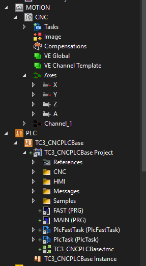
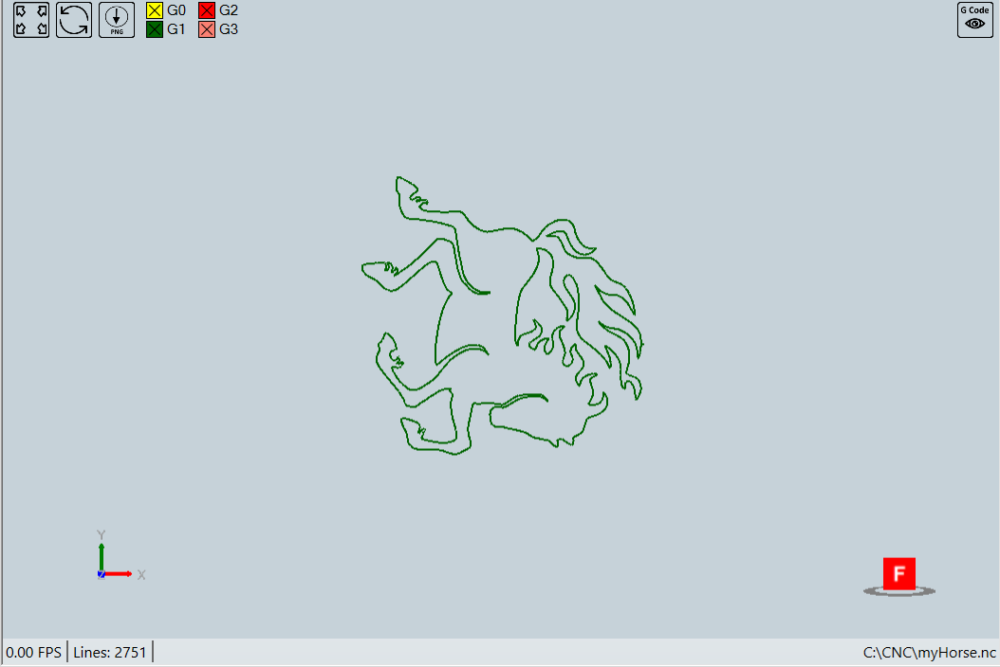

TwinCAT 3 CNC
For full documentation visit mkdocs.org.
CNC Introduction
CNC USB
- PLC Base Project
- CNC HMI
- CNC Documents
- nc files
CNC Quick Start
- Create a new TwinCAT Project
- Right Click "Motion" node to add a CNC configuration
- Right Click "Axis" to add 4 Axes
-
Change the axes names to be "X", "Y", "Z" and "A"
-
Right Click "PLC" node to add "Add Existing Item"

-
Activate the trial license
-
Activate Configuration
-
Start CNC HMI
- Manual Mode
- MDI Mode
- Auto Mode

CNC Parameter List
-
Mostly needed parameters
-
Channel Paramters
start_init_prog_file start_init.nc ( P-CHAN-00119 : Name of a sub program implicitly called at program start m_synch[34] 0x00000002 MVS_SVS (M Function )prog_start.slope.profile 1 ( P-CHAN-00071 : Type of acceleration profile (1: active jerk limitation) -
Axis parameters
-
Scaling Factor
getriebe[0].wegaufz 1048576 ( P-AXIS-00234 : [Incr.] Path resolution of the measuring system (numerator) getriebe[0].wegaufn 3600000 ( P-AXIS-00233 : [0.1um] or [10-4degree] Path resolution of the measuring system (denominator) -
Velocity, acceleration and jerk
getriebe[0].slope_profil.a_beschl 1000 ( P-AXIS-00001 : [mm/s2] or [degree/s2] Acceleration at machining feed G1,G2,G3 getriebe[0].slope_profil.a_brems 1000 ( P-AXIS-00002 : [mm/s2] or [degree/s2] Deceleration at machining feed G1,G2,G3 getriebe[0].slope_profil.a_grenz 2000 ( P-AXIS-00004 : [mm/s2] or [degree/s2] Acceleration at rapid movement G0 getriebe[0].slope_profil.tr_beschl_zu 30000 ( P-AXIS-00196 : [us] Ramp time for acceleration up-gradation at machining feed G1,G2,G3 getriebe[0].slope_profil.tr_beschl_ab 30000 ( P-AXIS-00195 : [us] Ramp time for acceleration down-gradation G1,G2,G3 getriebe[0].slope_profil.tr_brems_zu 30000 ( P-AXIS-00198 : [us] Ramp time for deceleration up-gradation G1,G2,G3 getriebe[0].slope_profil.tr_brems_ab 30000 ( P-AXIS-00197 : [us] Ramp time for deceleration down-gradation G1,G2,G3 getriebe[0].slope_profil.tr_grenz 30000 ( P-AXIS-00200 : [us] Ramp time at rapid movement G0 getriebe[0].dynamik.tr_min 5000 ( P-AXIS-00201 : [us] Minimum permissible ramp time getriebe[0].dynamik.tr_geom 5000 ( P-AXIS-00199 : [us] Geometric ramp time (ramp time of geometric contours) getriebe[0].dynamik.vb_max 100000 ( P-AXIS-00212 : [um/s] or [10-3degree/s] Maximum permissible axis velocity getriebe[0].dynamik.a_max 2000 ( P-AXIS-00008 : [mm/s2] or [degree/s2] Maximum permissible axis acceleration getriebe[0].dynamik.a_emergency 1750 ( P-AXIS-00003 : [mm/s2] or [degree/s2] Deceleration for an emergency stop getriebe[0].vb_eilgang 100000 ( P-AXIS-00209 : [um/s] or [10-3degree/s] Rapid mode velocity handbetrieb.hb.vb_max 60000 ( P-AXIS-00213 : [0.1um/s] or [10-4degree/s] Maximum velocity (G200) handbetrieb.hb.a_max 300 ( P-AXIS-00009 : [mm/s2] or [degree/s2] Maximum acceleration (G200) -
Position Lag
getriebe[0].slep_ueberw_typ 4 ( P-AXIS-00172 : Type of following error monitoring; 0=disable, 1=standard, 2=linear, 3=non-linear, 4=velocity independent getriebe[0].slep_min 15000 ( P-AXIS-00169 : [0.1um] or [10-4degree] following error on axis standstill getriebe[0].slep_max 100000 ( P-AXIS-00168 : [0.1um] or [10-4degree] following error during movement lr_param.suppress_pos_lag_error 0 ( P-AXIS-00176 : Suppression of position lag monitoring antr.use_drive_following_error 1 ( P-AXIS-00466 : Drive based position lag calculation -
Soft Limits
kenngr.swe_toleranz 100 ( P-AXIS-00179 : Tolerance range for software limit switch kenngr.swe_pos 15000000 ( P-AXIS-00178 : [0.1um] or [10-4degree] Positive software limit switch kenngr.swe_neg -10000000 ( P-AXIS-00177 : [0.1um] or [10-4degree] Negative software limit switch -
Motor Direction
lr_hw[0].vz_istw 0/1 ( P-AXIS-00230 : Sign reversal of actual value lr_hw[0].vz_stellgr 0/1 ( P-AXIS-00231 : Sign reversal of command value
-
-
-
CNC HMI
- Beckhoff Standard CNC HMI
- BOS CNC HMI